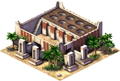
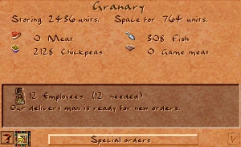
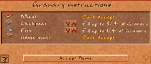

Granary

The Granary is the central depot for all locally produced food. Delivery workers from farms, wharves, ranches, and hunting lodges bring food here, and Bazaar buyers collect it for distribution to the city's neighbourhoods.
A Granary can hold up to 3 200 units of food across up to four different food types. The fill level is visible at a glance from the round holes on the building's roof — the higher the piles, the more food in store. Right-clicking opens a detailed breakdown by food type.
Imported food traded through the empire always goes to a Storage Yard, never directly to a Granary. Bazaar buyers can collect it from there instead.
Stats
- Cost (Normal)
- 100 Db
- Cost by difficulty
- VE 50 · Easy 70 · Normal 100 · Hard 200 · VH 300
- Storage
- 3 200 units · 4 food types
- Labor category
- Infrastructure
- Fire risk
- None (0)
- Damage risk
- Medium (5)
- Overlay
- Food Stocks
Overview
Grain storage was a cornerstone of Egyptian civilisation. Because the annual Nile flood made farming impossible for months at a time, large reserves had to be built up during the harvest season to feed the population through the inundation. Government-run granaries fed soldiers, construction crews, and state workers; wealthier households kept private stores; and specialised granaries held seed grain separate from food stocks, made visually distinct so they would not be accidentally consumed.
The granary form evolved over time. Archaic-period examples were cone-shaped with domed tops. By the Middle Kingdom — the era depicted in the game — the standard granary was a rectangular compound with a flat roof and a row of round filling holes, exactly as modelled in-game. Clay models of granaries found in Middle Kingdom tombs are among the most detailed surviving records of the building's layout.
Mechanics
Storage
Each Granary holds a maximum of 3 200 units total, divided between up to four food types. A fully stocked single-food granary therefore holds 3 200 units of that food. If a granary already holds four food types, it will refuse deliveries of any fifth type even if space remains.
Storage is tracked in loads of 100 units each. The eight fill-hole sprites on the building roof each represent 400 units — one sprite fills as the granary passes each 400-unit threshold.
Staffing thresholds
Three separate staffing thresholds control what a Granary can do. Understaffing disables functions in steps:
| Staffing | Cart pushers active | Accepts new deliveries | Get Up To orders |
|---|---|---|---|
| < 50 % | No | No | No |
| 50 – 74 % | Yes | No | No |
| 75 – 99 % | Yes | Yes | No |
| 100 % | Yes | Yes | Yes |
A granary below 75 % staffing will not accept food from incoming delivery workers, even if it has space. At below 50 % its cart pushers are completely idle — it cannot redistribute food to other granaries or fulfil Get Up To orders.
Bazaar range
Bazaar buyers collect food only from granaries within 40 tiles. A granary placed beyond this distance from a Bazaar is effectively cut off from supplying that market, regardless of road connectivity. Keep at least one Granary within 40 tiles of each Bazaar.
Imported food
Food obtained through trade (imported via the empire map) is always routed to a Storage Yard, never to a Granary. Bazaar buyers can then collect it from the Storage Yard. If you want to ensure locally produced food stays in Granaries for citizens while imported food is kept separate for export, there is no special action needed — the routing is automatic.
Special Orders
Right-click a Granary and press Special Orders to control how each food type is handled. Each food type can be set independently:
- Accept All / Fill to ¼ · ½ · ¾ Accept All allows unlimited intake of the food. Fill limits intake to a quarter, half, or three-quarters of the Granary's total capacity — useful for ensuring space remains for a second or third food type.
- Don't Accept The Granary stops taking new deliveries of this food but keeps whatever it already holds. Bazaar buyers and redistribution carts from other granaries can still draw down the existing stock. Use this to steer delivery workers to a farther granary, or to hold food you intend to export without having it consumed locally.
- Get Up To ¼ · ½ · ¾ · Full The Granary's cart pusher actively searches other Granaries and Storage Yards for this food until the specified level is reached. Requires 100 % staffing. Use this to keep a distribution Granary near a dense neighbourhood topped up even when food producers are far away.
- Empty Food Cart pushers redistribute all stock of this food to other Granaries or Storage Yards that will accept it. The Granary also stops accepting new deliveries of the food while emptying. Useful before demolishing a Granary or when reassigning food routing across the city.
Placement
Granaries need road access — both delivery carts from food producers and Bazaar buyers travel on roads. A Granary without road access is unreachable and receives no deliveries.
Keep each Granary within 40 tiles of at least one Bazaar. If you have multiple Bazaars, consider placing a Granary centrally accessible to all of them, or build one Granary per cluster of Bazaars.
Granaries are heavily undesirable (−8 at the building tile). Place them away from housing you want to evolve past basic tiers, or cluster them on the city's outskirts alongside other undesirable infrastructure such as Hunting Lodges and Storage Yards.
Placing a Granary close to food producers — farms, wharves, hunting lodges — shortens the delivery walk. If a delivery worker has to travel so far that the producer finishes a second load before the cart returns, the producer sits idle. Short delivery walks maximise food throughput.
Tips
- When food deliveries stall, check staffing first. A Granary below 75 % will refuse new food even with plenty of space.
- If your city eats multiple food types, use Fill orders to divide a single Granary's 3 200 units evenly — for example, Fill ½ for grain and Fill ½ for fish keeps both types available rather than one crowding the other out.
- Use Don't Accept on a Granary near food producers you intend to export — this lets you send production to a Storage Yard for trade while a separate city-side Granary handles citizen consumption.
- Build two smaller Granary clusters rather than one large one if your city is spread out — it shortens both delivery and Bazaar walks, improving food distribution speed.
- Granaries have no fire risk (fire_risk 0), so they don't need a Firehouse patrol. Save patrol coverage for higher-risk neighbours.
- The Overseer of the Granaries (keyboard shortcut 5) shows all Granaries, their fill levels, and staffing at a glance — use it when diagnosing food distribution problems.
In the original game
Screenshots from Cleopatra: Queen of the Nile (Impressions Games, 2000), the expansion to Pharaoh that Akhenaten targets.


Developer reference
All paths relative to the repository root.
Building config — src/scripts/building_granary.js
The building definition and placement check live in src/scripts/building_granary.js.
building_granary {
labor_category : LABOR_CATEGORY_INFRASTRUCTURE
meta { help_id: 3, text_id: 98 }
building_size : 4 // 4×4 tiles
cost [ 50, 70, 100, 200, 300 ] // VeryEasy … VeryHard
laborers [20]
fire_risk [0] // no fire risk
damage_risk [5]
desirability { value[-8], step[1], step_size[-2], range[4] }
max_capacty_stored : 3200
allow_food_types : 4
min_workers_percent_for_tasks : 50 // cart pushers active above this
min_workers_percent_for_accepting: 75 // accepts deliveries above this
min_workers_percent_for_getting : 100 // Get Up To orders honored at 100% only
begin_spot_pos [110, -74]
res_image_offsets [[0,0],[16,9],[35,18],[51,26],
[-16,7],[1,16],[20,26],[37,35]] // 8 fill-hole positions
sound_channel : SOUND_CHANNEL_CITY_GRANARY
overlay : OVERLAY_FOOD_STOCKS
flags { is_food: true }
}
// Placement warning: shown if no Bazaar exists in the city yet
[es=(building_granary, on_place_checks)]
function building_granary_on_place_checks(ev) {
var has_bazaar = city.count_active_buildings(BUILDING_BAZAAR) > 0
city.warnings.show_if_not(has_bazaar, "#build_bazaars_to_distribute_food")
}To adjust storage capacity, change max_capacty_stored (note: typo in the original — capacty). To allow more food types simultaneously, raise allow_food_types. The res_image_offsets array defines the pixel positions of the 8 fill-hole overlays drawn on top of the base sprite.
C++ implementation — src/building/building_granary.h / .cpp
src/building/building_granary.h declares the building_granary class (inherits building_storage). Key constants in src/building/building_granary.cpp:
constexpr int ONE_LOAD = 100; // units per delivery load
constexpr int FULL_GRANARY = 3200;
constexpr int THREEQUARTERS_GRANARY= 2400;
constexpr int HALF_GRANARY = 1600;
constexpr int QUARTER_GRANARY = 800;
constexpr int CURSE_LOADS = 16; // loads removed by a curseKey methods:
is_accepting(resource)— checks Special Orders + staffing threshold (75 %)is_getting(resource)— true if the Get Up To order is active and staffing ≥ 100 %add_resource / remove_resource— emitsevent_granary_resource_added / _removeddetermine_worker_task()— returns GETTING or EMPTYING based on current orders, or NONEbless()— called by a god blessing; fills the granary with foodbuilding_granary_for_storing()— free function; 2-pass search: Accept-mode granaries first, then Get-mode
JavaScript bindings (src/building/building_granary_js.cpp) expose:
__granary_get_amount(bid, resource) // units of a specific food
__granary_get_total_stored(bid) // total units across all foods
__granary_is_accepting(bid, resource) // current accept stateGame messages — src/scripts/game_messages_en.js
| Key | ID | Line | When shown |
|---|---|---|---|
message_building_granary |
3 | 25 | Building info panel (right-click on Granary). Full description covering food delivery, Bazaar interaction, Special Orders, and desirability note. |
message_granary_history_2 |
5 | 45 | History panel linked from the help button. Covers Archaic → Middle Kingdom granary evolution and government-run storage. |
The meta { help_id: 3, text_id: 98 } field in the building script maps help_id → message_building_granary (the extended help panel) and text_id → the in-game building name string.
Fill-hole rendering — res_image_offsets
The 8 round fill-hole sprites are drawn on top of the base building sprite at the pixel offsets listed in res_image_offsets (relative to begin_spot_pos [110, -74]):
// 8 fill-hole pixel offsets from begin_spot_pos
res_image_offsets [[0,0], [16,9], [35,18], [51,26],
[-16,7], [1,16], [20,26], [37,35]]Each offset corresponds to one of the 8 storage sections (one per 400 units). The sprite drawn at each position changes based on how full that section is — from empty pit to overflowing pile. The draw_stores() method in building_granary.cpp iterates the 8 offsets and selects the appropriate sprite frame for each section's fill level.
The base building animation uses pack:PACK_GENERAL, id:99; the working ambient animation is pack:PACK_SPR_AMBIENT, id:47 (23 frames).